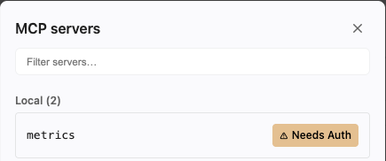
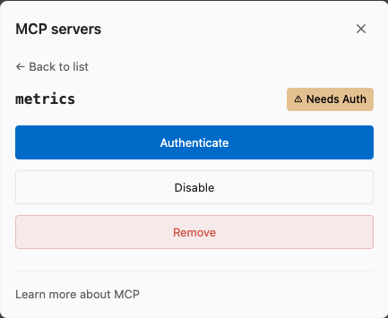
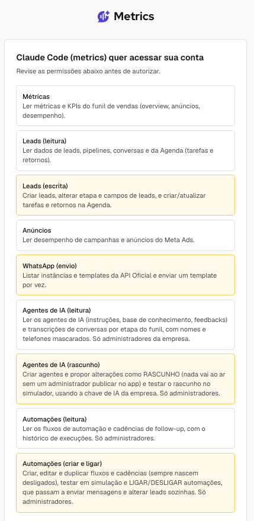
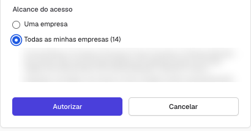
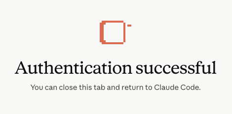

Tudo aqui é pedido no chat do Claude, dentro da pasta OdontoRise, depois do Onboarding. Cada skill mostra o que faz e se já está pronta. Nada é executado em conta de anúncio sem o seu OK, item por item.
Skill Meta Ads (meta-ads-odontorise)
setup
Confere programas, credencial, validade do token, permissões e as contas que você enxerga. Rode depois do Onboarding e sempre que algo parar.
cadastro de clientes
Busca o cliente no ClickUp, copia para o seu cadastro local só o que serve para operar e confirma com você a conta Meta dele.
leitura da conta
Contas, campanhas, conjuntos, anúncios e criativos, com status e orçamento.
resultado
Mensagens iniciadas, custo por mensagem iniciada, gasto, CTR, CPM, alcance, impressões e frequência por período.
comparar janelas
As três janelas (30, 14 e 7 dias) lado a lado por anúncio, antes de qualquer pausa.
segmentação
Cidades, bairros e públicos disponíveis para um conjunto, sem ampliar raio nem incluir Facebook.
saúde da conta
Saldo, pagamento, anúncios reprovados, campanha ou criativo gastando sem mensagem, custo por mensagem acima de R$35 e há quantos dias a conta não recebe otimização.
subir campanha
Campanha, conjunto e anúncio de conversão ao WhatsApp no padrão da casa, tudo pausado até o seu OK. A Página do cliente precisa ter WhatsApp Business conectado.
Rotina do gestor
/registrar-otimizacao
Registra no ClickUp o que você fez na conta (otimização, mudança, saldo): junta as ações do dia, escreve o registro no padrão, comenta na tarefa rotineira do cliente e conclui a rotina.
/custo-por-mensagem
Custo por mensagem iniciada dos seus clientes na semana, pronto para colar na planilha.
/contas-criticas
Tudo o que está pegando em cada conta sua, de uma vez: saldo acabando (e em quantos dias), anúncio reprovado, campanha gastando sem mensagem, criativo que gastou sem gerar mensagem, custo por mensagem acima de R$35 ou subindo, e há quantos dias a conta está sem otimização (mais de 10 é crítico). Ranking do pior para o melhor, com a ação para cada conta. Só os seus clientes.
/dias-sem-otimizacao
Lista dos seus clientes por dias desde a última mexida na conta.
/recarga-saldo
Quais contas pré-pagas estão acabando e quanto pedir ao cliente.
/sugerir-roteiros
Roteiros de vídeo a partir dos anúncios que mais convertem na conta do cliente.
/radar-criativos
Lê os posts do Instagram do cliente nos últimos 7 dias, diz quais falam com o paciente e valem anúncio (e quais não: mentoria, pessoal, política), ranqueia por engajamento e sobe os aprovados como anúncios pausados no conjunto que você escolher, mantendo curtidas e comentários do post.
/raio-x-concorrentes
Quem anuncia até 5 km da clínica do seu cliente na Biblioteca de Anúncios do Meta, o que anunciam (temas, formatos, estilo dos vídeos) e o que a clínica ainda não faz, entregue como documento visual para o dentista ler. Funciona com ou sem Apify: sem conta, o Claude coleta pelo navegador e o resultado é o mesmo. Só os seus clientes. Novo em 07/10/2026.
/legenda-video
Transcreve o vídeo na sua máquina e escreve três versões de legenda no estilo dos anúncios da conta.
/feedback-sexta
Texto do feedback semanal de cada cliente seu, com resultado da semana e próximos passos, pronto para colar no grupo.
/mensagem-grupo
Texto pronto para você colar no grupo do cliente: resultado, pedido de saldo, aviso de teste.
/meu-dia
Suas tarefas do ClickUp de hoje e as atrasadas, com o que fazer em cada uma.
Conectar o Metrics
O Metrics registra o que acontece com o lead depois da mensagem: quanto a clínica demora para responder, quem agendou, compareceu e fechou, e de qual campanha veio. Conecte uma vez, com o seu login do Metrics. Novo em 23/10/2026.
- Atualize o pacote. Peça no Claude
/atualizar-git-odontorise: as 4 skills do Metrics chegam junto. - Adicione o servidor. No chat, digite
/mcpe adicione um servidor: nomemetrics, tipo HTTP, escopo do usuário (vale em qualquer pasta) e o endereço abaixo.Se você instalou o comandoendereço do Metricshttps://metrics.app.br/api/mcp
claudeno terminal (opcional no Onboarding), pode usar este comando no lugar:terminalclaude mcp add --transport http --scope user metrics https://metrics.app.br/api/mcp
- Autentique. No
/mcp, ometricsaparece com "Needs Auth". Clique nele e depois em Authenticate.
O metrics na lista do /mcp, ainda sem login. 
Clique em Authenticate. Não use Disable nem Remove. - Autorize no Metrics. O navegador abre no Metrics (se pedir, entre com o seu login). A tela lista o que o Claude poderá fazer: as permissões em amarelo são de escrita, e as 4 skills só leem. Em Alcance do acesso, marque Todas as minhas empresas: os clientes que entrarem depois na sua conta também ficam liberados. Clique em Autorizar.

As permissões. Em amarelo, as de escrita. 
Marque Todas as minhas empresas e clique em Autorizar. - Volte ao Claude. Quando aparecer "Authentication successful", feche a aba, volte ao VS Code e abra uma conversa nova.

Pronto: pode fechar a aba. - Teste. Peça "liste os clientes que tenho no Metrics". Tem que aparecer a lista do seu acesso.
⚠️
O Metrics também altera dados: muda etapa do lead e dispara template no WhatsApp. As 4 skills só leem e sugerem. Se o Claude pedir para alterar algo no Metrics, a resposta é não.
Skills do Metrics
/tempo-de-resposta
Quanto a clínica demora para responder o lead no WhatsApp nos últimos 7 dias, separado em horário comercial, depois do horário e fim de semana, com cada lead de horário comercial que ficou sem resposta. Percebe quando a "resposta" é a saudação automática do WhatsApp Business. Se a clínica tem outro horário, diga qual.
/sem-agendamento
Seus clientes sem agendamento registrado há mais de 15 dias, com a data do último agendamento e quantos leads entraram no período: separa problema no comercial da clínica de problema de volume. Cliente com Metrics há menos de 30 dias aparece à parte.
/funil-comercial
Quantos agendam, comparecem e fecham em cada cliente nos últimos 30 dias, comparado com os 30 anteriores, e a etapa que mais trava em cada um e na sua carteira. Cliente que pula etapa no registro aparece como registro incompleto e sai da média.
/campanhas-que-convertem
Quais campanhas e criativos trouxeram agendamento, comparecimento e venda na semana, com status, investimento e custo por lead, o link do criativo campeão, de onde vieram os últimos 10 agendamentos e até 3 sugestões: manter, revisar ou pedir conteúdo à doutora. Antes de sugerir pausa, confere 30, 14 e 7 dias.
Raio-x de concorrentes: o que precisa antes
⚠️
A skill só começa com 4 respostas. 1. Nicho do cliente (procedimento principal: lentes, implantes, protocolo, HOF). Só entram concorrentes com o mesmo foco. 2. Instagram do cliente. 3. Região: a cidade do cliente, até 5 km da clínica. É o padrão da casa; pedir mais que isso aumenta o volume de páginas e anúncios a coletar e dilui o documento, e o Claude avisa antes de aceitar. 4. Referências ou concorrentes que o cliente já citou (arrobas, prints, nomes de clínica). O que estiver no cadastro do cliente o Claude já usa; o resto ele pergunta.
🔌
Apify é opcional e o token é pessoal. A primeira pergunta do Claude é se você tem conta própria no Apify. Se tiver, o token vai em
~/OdontoRise/credentials/apify-odontorise.env e os robôs trazem também as fichas do Google Meu Negócio e os seguidores de cada concorrente. Se não tiver, o Claude segue pelo navegador e o documento sai do mesmo jeito, porque a Biblioteca de Anúncios do Meta é pública; só ficam de fora as fichas do Google e os seguidores (entram se você colar a lista do Google Maps). O Apify do Lucas é de uso só dele: a skill bloqueia token de outra pessoa, então não peça nem copie token de ninguém.🧩
Navegador do raio-x. O instalador do pacote instala o Playwright e o Chromium (uma vez, uns 150 MB). Se você instalou o pacote antes de 07/10/2026, peça no Claude
/atualizar-git-odontorise e depois rode de novo o comando do passo 4 do Onboarding, ou peça "rode o setup da skill Meta" para ver o que falta. Ao terminar um raio-x, registre a entrega no ClickUp com /registrar-otimizacao.🗓️
Atualizações desta página. 23/10/2026: Metrics no Claude, com o passo a passo para conectar e as skills /tempo-de-resposta, /sem-agendamento, /funil-comercial e /campanhas-que-convertem. 07/10/2026: /raio-x-concorrentes aberto aos gestores, com rota sem Apify, trava de token pessoal e regra de 5 km. 06/10/2026: /contas-criticas com os cinco sinais e só os seus clientes; /radar-criativos. 02/10/2026: primeira versão do raio-x, só para o head.
💡
Métricas da casa: conversão ao WhatsApp. Não usamos custo por lead de formulário ou site.